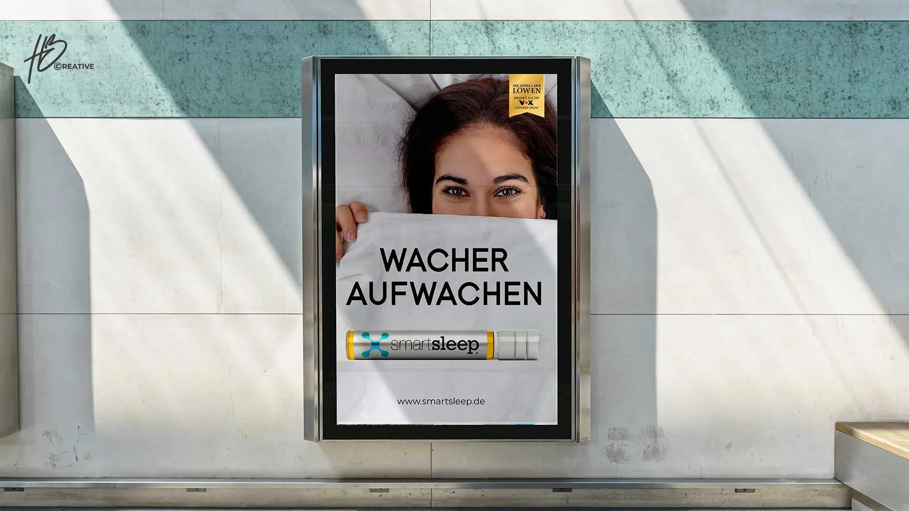
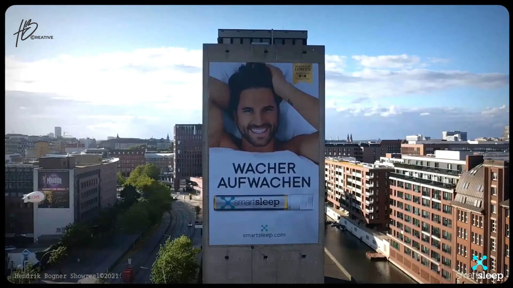

3D Design & Renderings
Durch die Verwendung von 3D-Renderings anstelle aufwendiger Shootings lassen sich Zeit und Kosten bei der Erstellung von Produktabbildungen einsparen.
Zu den Insights
Teamzuwachs
Die Einführung von Smartsleep Immune und Smartsleep Beauty war ein wichtiger Schritt in der Erweiterung der Produktpalette. Die zwei Newcomer haben sich schnell als Erfolg erwiesen und haben, mit ihren speziellen Funktionen unser Markenportfolio bereichert um den Bedürfnissen unserer Kunden und Fan-Base gerecht zu werden.
Zu den Insights
Quick & Easy
Antworten auf Fragen zur Produkteinführung: Im Rahmen einer FAQ-Kampagne wurden Kundenfragen in visueller Form adressiert. Für jedes der drei Produkte wurden zwölf Fragen mithilfe von Animationen beantwortet, sodass insgesamt 36 ansprechende Animationen entstanden sind, die Kunden über die spannenden Produktmerkmale informieren.
Zu den InsightsQuick & Easy
Die Animationsvideos bieten eine schnelle, unterhaltsame und informative Möglichkeit, die gelaunchten Produkte vorzustellen und dabei zu helfen, sie durch die Produktvorteile voneinander zu unterscheiden.
Zu den InsightsQuick & Easy
FAQs in spannender Erzählform stärkt das Markenimage und die Fan-Base in den Social-Media Kanälen.
Zu den Insights
Easter Eggs Gewinnspiel
Weit mehr als nur ein himmlischer Brotaufstrich.
Auf dieser Landingpage gibt es zu Ostern einiges zu entdecken.

Promo Video
Wer sind die coolsten im ganzen Land?
Der internationale Automobilzulieferer Hella will es wissen.